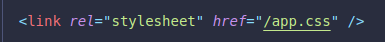
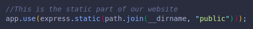

This refers to CSS and JS scripts that run in the browser.
We need to serve the stylesheets and JS scripts, fonts, images, logos, etc.
We can do this with express.js!
app.use(), as we've used before, will run every time.
We use this method with express.static() inside it.
We must pass the folder where our files are to this second method.
(We can have multiple folders for each type of file, like one for js and one for css, but it is common to have them grouped in a single folder.)
Now we can link our stylesheet in our EJS file, no need for the folder to be included, only the file name.
This will apply to every webpage that generates.
In this example we use a folder called public, which inside has our app.css stylesheet file!
We can also use the __dirname method to be able to run our server from anywhere we are in the file system if using the relative file path.
We can use templates inside our templates!
We can include them when needed to not have to write common code again and again.
To do this, we use <%- include("partials/head") %>
This tag doesn't allow the HTML to escape, it treats any content files as a string!
(If we had a partial template for the head of an HTML inside a folder called partials.)
We can use as many partials as we want in order to reuse code, and save time!